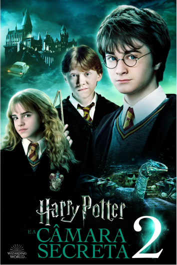

Livro 2
Harry Potter e a Câmara Secreta

Resumo
Após o primeiro ano de Harry em Hogwarts, ele retorna para à casa de seus tios para passar o verão. Um dia, um elfo doméstico chamado Dobby aparece em seu quarto resgatam o garoto da casa dos Dursley com um carro voador. Pouco depois de chegar em Hogwarts, mensagens começam a aparecer nas paredes dos corredores revelando que a Câmara Secreta foi aberta novamente e que o herdeiro de Slytherin matará todos os alunos que não provém de uma família bruxa. Depois disso, alguns habitantes da escola começam a aparecer petrificados.
Enquanto isso, Harry, Ron e Hermione descobrem a Murta-Que-Geme, o fantasma de uma menina que foi assassinada quando a Câmara foi aberta pela última vez no banheiro em que morreu. Murta mostra a Harry um diário que pertence a Tom Marvolo Riddle. Apesar de todas as páginas estarem em branco, Harry recebe uma resposta quando escreve. Finalmente, o livro o mostra Hogwarts cinquenta anos antes. Lá, ele vê Tom Riddle, um aluno na época, acusando Rubeus Hagrid de ter aberto a Câmara.
Passados quatro meses, o diário é misteriosamente roubado e, pouco depois, Hermione é petrificada. No entanto, continha em mão uma anotação explicando que o culpado pela petrificação dos seres do castelo era um basilisco, uma cobra gigante que mata a todos que olham diretamente em seus olhos e petrifica aqueles que os olham por um reflexo qualquer. Enquanto os ataques continuam, Cornelius Fudge, Ministro da Magia, envia Hagrid para Azkaban (a prisão dos bruxos) por precaução, e Lucius Malfoy, um antigo partidário de Voldemort, suspende Dumbledore de seu cargo como diretor.
Depois que a irmã caçula de Ron, Ginny, é levada para dentro da Câmara, o corpo docente da escola insiste que o professor de Defesa Contra as Artes das Trevas, Gilderoy Lockhart, controle a situação. No entanto, quando Harry e Ron entram em sua sala com o objetivo de contarem o que descobriram sobre o basilisco, o professor revela que é uma fraude e que toma crédito dos triunfos de outros e ameaça apagar a memória dos dois garotos. Eles desarmam Lockhart e o levam para o banheiro da Murta-Que-Geme, onde Harry descobre a entrada para a Câmara Secreta. Nos esgotos da escola, Lockhart pega a varinha de Ron e tenta apagar a memória deles novamente, porém, por conta do acidente com a varinha do garoto no começo do ano, o feitiço sai pela culatra do objeto. Como resultado, Lockhart sofre uma amnésia total e uma parte do túnel é destruída, separando Harry de Ron e Lockhart.
Enquanto Ron tentava refazer o túnel, Harry entra na Câmara Secreta, onde Ginny encontrava-se desmaiada ao lado do diário. Enquanto Harry a examina, Tom Riddle aparece, com o mesmo rosto e corpo que Harry havia visto nas memórias do diário. Ele conta que Ginny escrevia todos os seus segredos no diário, os confiando em "um estranho invisível", fato que ele se aproveita e a força abrir a Câmara Secreta. Ele revela que seu nome produz o anagrama I am Lord Voldemort (na tradução, Eis Lord Voldemort) e que Ginny tentou se livrar do diário no banheiro quando descobriu que era responsável pelos ataques. Quando Riddle acaba de contar a história, libera o basilisco para matar Harry. A fênix de Dumbledore, Fawkes, entra na Câmara e entrega ao garoto a espada de Godric Gryffindor envolvida pelo Chapéu Seletor. Harry usa a espada para matar o monstro e é perfurado por uma das presas venenosas da criatura, porém cura seu braço com suas lágrimas. Ele apunhala o diário com a presa do basilisco e Riddle desaparece. Depois que Ginny acorda, Fawkes leva os quatro para fora do túnel.
Após saírem da câmara, Harry conta a história completa a Dumbledore, que voltou ao cargo de diretor da escola. Quando Harry menciona que é muito parecido com Tom Riddle e que deveria ter ido para Slytherin, Dumbledore responde que Harry escolheu Gryffindor e que só um verdadeiro membro de tal casa conseguiria ter tirado a espada de Godric Gryffindor do Chapéu Seletor. Harry acusa Lucius Malfoy de ter colocado o diário entre os livros de Ginny enquanto estavam comprando os materiais escolares no Caldeirão Furado, antes do ano letivo ter começado, e ele responde "Prove". Mais tarde, Harry liberta Dobby da família Malfoy, o entregando uma meia. Finalmente, todas as vitimas que foram petrificadas pelo basilisco voltam ao normal por uma poção que levou meses para ser preparada.
Poster do Filme
Trailer
Curiosidades
- J.K. Rowling tinha planejado inicialmente que a série Harry Potter teria sete livros desde o início, com cada livro representando um ano escolar de Harry. Ela escreveu o segundo livro, "Harry Potter e a Câmara Secreta", enquanto ainda estava promovendo o primeiro livro.
- O personagem Gilderoy Lockhart, que é introduzido neste livro, foi inspirado em um professor da escola de Rowling. Ela descreveu o professor como sendo arrogante e convencido, e muitas das histórias de Lockhart foram baseadas nas histórias que o professor contou sobre si mesmo.
- A primeira edição americana do livro teve um erro de digitação em uma das passagens. Em vez de "1 wand" (1 varinha), a edição dizia "1 wang" (1 pênis). A editora correu para corrigir o erro em futuras edições, tornando a primeira edição um item de colecionador valioso.
- O título original do livro em inglês, "Harry Potter and the Chamber of Secrets", foi traduzido literalmente para muitas outras línguas, incluindo o francês, onde se tornou "Harry Potter et la Chambre des Secrets", e o português, onde se tornou "Harry Potter e a Câmara dos Segredos". No entanto, em alguns idiomas, o título foi modificado para se adequar melhor à cultura local, como no caso do alemão, onde se tornou "Harry Potter und die Kammer des Schreckens" (Harry Potter e a Câmara do Terror).
Galeria de imagens